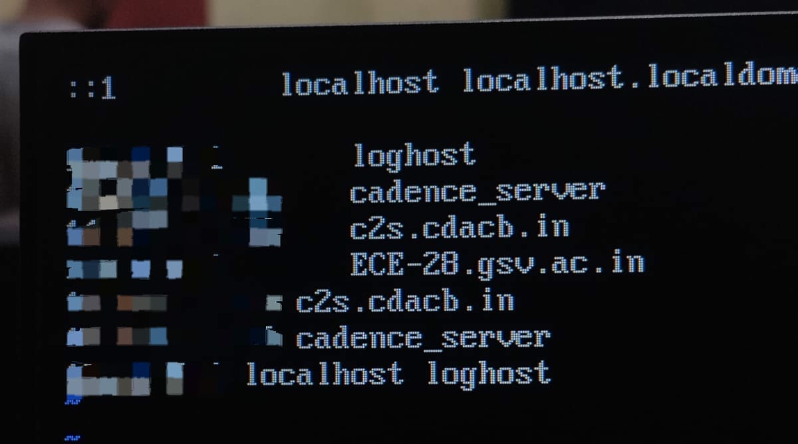
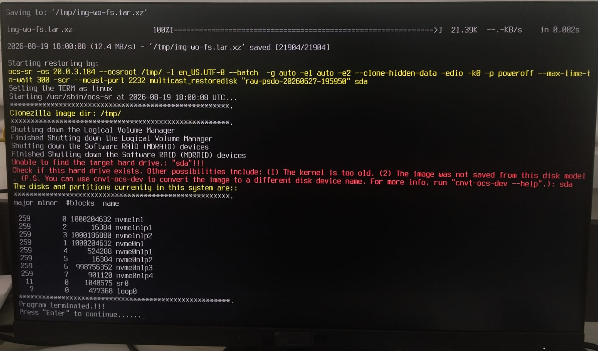
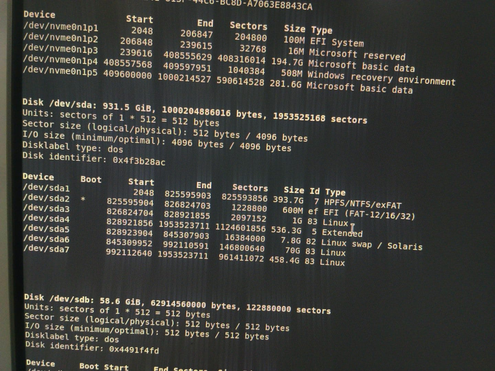

RHEL Workstation Deployment, Cadence EDA Environment Setup & Large-Scale Clonezilla Replication
Overview
During my summer internship 2026, I worked on preparing a Linux-based semiconductor design laboratory for a chip-design workshop. The lab consisted of more than 30 workstations that needed a consistent Red Hat Enterprise Linux environment capable of running a Cadence EDA toolchain for Verilog and RTL-oriented workflows.

The work quickly became a systems deployment problem rather than a simple software installation task. Each workstation needed the operating system, dependencies, Cadence tools, shell environment, network identity, users, groups, permissions, and supporting configuration files to behave consistently. The first phase focused on building a correct workstation; the second phase focused on reproducing that validated workstation reliably across the laboratory. All this was done under the guidance of Dr. Prasiddh Trivedi, Assistant Professor, GSV.
System Architecture
The architecture evolved over time. Initially, the work centered on one workstation at a time: install RHEL, configure the OS, install Cadence components, establish the shell environment, validate tool execution, and document the result. Once a known-good system existed, that workstation became the reference machine for the larger deployment workflow.
User, group, UID, GID, ownership, and permission behavior also mattered. Some account and group changes had filesystem implications because Linux permissions are tied to numeric identities, not just displayed usernames. A username or GID change could leave files inaccessible or apparently owned by a different account unless ownership and group membership were kept consistent with the intended laboratory configuration.
Host Identity and Network Configuration -- /etc/hosts

In the laboratory environment, consistent hostname resolution was important for identifying workstations and maintaining predictable communication between systems. The /etc/hosts file provided local hostname resolution independent of an external DNS service, allowing machines to resolve designated laboratory hosts using their assigned names.
Shell Environment -- csh and .cshrc
The Cadence environment used in the laboratory relied on the C shell
(csh) for initialization and tool execution. Although the
underlying operating system could use other shells for general-purpose
administration, the Cadence setup was built around C-shell syntax and
environment configuration. For this reason, users entered a
csh session before launching the EDA tools.
The user-level .cshrc file acted as the main initialization
point for this environment. When a C-shell session started, the file was
read automatically and used to define the paths, variables, aliases, and
library locations required by the installed Cadence software. This removed
the need to configure the environment manually every time a user logged in.
In practice, the .cshrc file connected the user session to the
installed EDA toolchain. Executable search paths were extended to include
Cadence binaries, required environment variables were initialized, and
supporting libraries were made visible to the runtime environment. Once the
shell initialization completed successfully, tools such as Genus and the
other installed Cadence components could be launched directly from the
terminal.
Cadence Environment Configuration
The Cadence installation itself was only one part of the workstation setup. The operating system also needed to know where the software was located and how its executables and supporting libraries should be resolved. This was handled through environment configuration associated with the C-shell startup process.
Variables such as the executable PATH, library search paths,
installation-root references, and licensing-related configuration linked
the shell environment to the corresponding Cadence directories. The exact
values depended on the installed tool version and directory layout, but the
purpose remained the same: create a predictable runtime environment in
which the EDA tools could locate all required binaries, libraries, and
support files.
This separation between software installation and shell configuration was important during validation. A tool could be present on disk while still failing to launch if the corresponding environment variables or library paths were missing or incorrect. As a result, successful deployment required validation of both the installed files and the environment used to invoke them.
Installation Directory Structure -- /home/install
The main EDA software stack was maintained under a common installation
hierarchy beginning at /home/install. Keeping the software in a
predictable location simplified environment configuration and made it easier
to reproduce the same workstation state across the laboratory.
Rather than placing application files inside individual user directories, the installation hierarchy acted as a centralized software location shared by the configured workstation environment. The C-shell initialization files could therefore reference a fixed set of paths regardless of which user was working on the machine.
/home/install/
├── genus/
├── incisive/
├── assura/
└── foundry/
└── ...The exact directory names varied according to the installed release and tool package, but the overall structure remained consistent: software was grouped under a known installation root, while user-specific configuration remained in the corresponding home directory.

User Environment and Filesystem Ownership
The laboratory configuration also depended on maintaining a consistent relationship between user accounts, groups, and filesystem ownership. In Linux, file ownership is stored using numeric user and group identifiers rather than only the visible account names. As a result, renaming a user or modifying group identifiers could affect access to previously created files and directories.
During system preparation, user names, group membership, UID values, and GID values therefore had to remain aligned with the intended laboratory configuration. Where account information was changed, existing ownership and permissions also had to be checked so that the configured users retained access to the Cadence installation, project directories, and supporting files.
This became especially important once the workstation was treated as a reference system. Any incorrect ownership, group assignment, or inaccessible directory on the reference machine would also be reproduced during later deployment. The reference workstation therefore had to be validated not only at the application level, but also at the filesystem and user-account level.
Workstation Configuration Layout
Taken together, the workstation environment can be viewed as several layers of configuration rather than a single software installation. System-level files provided host and network identity, user-level shell configuration prepared the Cadence runtime environment, and the shared installation hierarchy contained the actual EDA software.
/
├── etc/
│ └── hosts # local hostname resolution
│
└── home/
├── install/ # shared Cadence / EDA installation
│ └── .cshrc # C-shell environment initialization
│
└── <user>/
This arrangement made the workstation easier to validate and later easier to replicate. A functioning system depended on all of these layers being correct at the same time: host configuration, user identity, filesystem permissions, shell initialization, environment variables, and the software installation itself.
Workstation & Software Environment
The workstation build began with RHEL installation and system preparation. That included installing required dependencies and libraries, configuring the operating system for the laboratory environment, and verifying that the machines could support the EDA stack rather than only completing the base OS install.
The Cadence environment included GENUS, INCISIVE, FOUNDRY, and ASSURA. The setup required more than placing binaries on disk: executable paths, environment variables, library paths, supporting configuration files, and shell initialization had to be arranged so users could invoke the tools consistently. Files such as .cshrc were part of the user environment, while system files such as /etc/hosts supported hostname and network identity requirements.
Deployment & Automation
After the manual workstation build had been configured, tested, and documented, it became clear that repeating the same process across more than 30 machines would not scale well. The validated reference workstation changed the problem: instead of asking how to install every component again, the goal became how to reproduce the complete known-good system state.
In the replication phase, the reference workstation provided the complete source state: RHEL, filesystem layout, Cadence installation, users, groups, permissions, environment files, and network-related configuration. A Clonezilla deployment server provided the PXE boot environment and Clonezilla Live Lite workflow. Target machines booted over the network as PXE clients, entered the Clonezilla environment, and were intended to receive a disk-level deployment through multicast or raw/device-oriented restoration.
- Reference workstation: the validated source system containing the complete RHEL and Cadence environment.
- Deployment server: the Clonezilla Live Lite and PXE orchestration point responsible for distributing client instructions and the restoration workflow.
- PXE clients: target workstations that boot into Clonezilla, identify their local storage device, and participate in the deployment.
I moved into a Clonezilla-based deployment workflow using PXE netboot and Clonezilla Live Lite. The intended deployment was network-driven: target workstations boot into Clonezilla over the network, receive client-side instructions, and restore the reference system at disk level. This approach is meant to preserve the operating system, filesystem, installed Cadence environment, users, permissions, configuration files, and other machine state rather than reinstalling individual packages by hand.

Scale shaped the design. Clonezilla massive deployment and multicast were investigated so multiple machines could receive the same source stream instead of transferring a full independent copy of the workstation state to each target. I also investigated raw/device-oriented deployment, including Clonezilla's raw-psdo pseudo-device representation, client-side ocs-sr, and the distinction between restoring from an image repository and restoring from a device-oriented source.
- Manual RHEL and Cadence setup produced the validated reference workstation.
- Clonezilla Live Lite and PXE shifted the process from local installation to network boot and orchestration.
- Massive deployment and multicast addressed the need to distribute one workstation state across many machines.
- Raw/device-oriented restoration focused on reproducing the source disk state, not just copying application files.
Challenges
The first phase required troubleshooting missing dependencies, library compatibility, executable paths, shell environment problems, filesystem permissions, configuration differences between machines, and Cadence tool invocation failures. The issues were rarely isolated to one package; they came from the interaction between RHEL, the filesystem, shell initialization, users, groups, networking, and the EDA toolchain.
The Clonezilla phase exposed a different class of problems. Some target machines rejected the PXE boot image due to firmware Secure Boot or authentication configuration, so deployment reliability depended partly on client firmware state. Once clients entered Clonezilla, failures around ocs-client-run.conf showed that the problem was not only disk restoration; the Live Lite orchestration layer also had to generate and deliver the correct client-side instructions.

Block-device naming became a major debugging point. Clonezilla-generated commands assumed a target such as sda, while target machines exposed NVMe storage as /dev/nvme0n1 or /dev/nvme1n1. Simply replacing sda in a server-side command was not enough, because the server and client have different device namespaces. A disk visible inside the PXE-booted client environment is not necessarily visible to the deployment server.
The investigation included commands and modes such as restoredisk, multicast_restoredisk, from-device, from-image, raw-psdo, and client-side ocs-sr. A representative generated operation had the shape:
The server side command was:
ocs-live-feed-img -cbm netboot -dm auto-detect -lscm massive-deployment -mdst from-device -cdt disk-2-mdisks -bsdf sfsck -g auto -e1 auto -2 -x -j2 -edio -k0 -p poweroff -md multicast --clients-to-wait 3 --max-time-to-wait 300 start "sda" sdaThe corresponding client side command to restore was:
ocs-sr ... multicast_restoredisk "raw-psdo-..." sdaThe Main Issue
The important part of the server-side command was the final sda argument:
start "sda" sda. This was being interpreted as the target block device for the deployment operation. The problem was that sda described the block-device naming on the machine from which the deployment was being initiated, while the actual target machines did not expose their primary disk as sda at all.

On the target machines, the primary NVMe drive appeared as /dev/nvme1n1 (and on some machines as /dev/nvme0n1). Therefore, the command was effectively carrying an assumption about the target hardware that was not true.
This distinction was easy to miss because the deployment server could see its own disk as /dev/sda, but that device namespace does not carry over to the client. The server and the PXE-booted client are separate machines with separate block-device namespaces.
Trying to Work Around the Device Name
The first possible solution was to create a symlink so that the expected sda path would point towards the actual NVMe device. This would allow the existing deployment command to continue using sda without changing the rest of the deployment configuration.
Another approach was to manually assign or force the target block device to appear as /dev/sda.
Both approaches initially looked reasonable, but they were ultimately bad solutions.
The reason is that names such as sda are not permanent identifiers for a particular physical disk. Linux assigns these device names according to the devices detected by the system. If a machine does not already have another SATA disk attached, connecting a USB drive or an external HDD can cause that device to appear as /dev/sda.
In other words, forcing the NVMe drive to take the name sda would make the deployment depend on an assumption that could change simply because another storage device was connected to the machine.
This also meant that the problem was being approached from the wrong direction. Instead of trying to make every target machine conform to the block-device name expected by the original server, it made more sense to use a deployment source whose storage configuration already matched the target machines.
Changing the Deployment Source
The final solution was therefore to stop cloning directly from the main server.
I selected a client machine that had already been successfully cloned from the original hard disk. This machine had the same storage architecture as the remaining clients, with its primary disk exposed as /dev/nvme1n1.
Since the remaining client machines shared the same architecture and also used nvme1n1, this machine could act as the new source for the deployment.
Original Server / HDD
│
▼
Successfully cloned
client machine
│
▼
Remaining clients
/dev/nvme1n1
This removed the need to create artificial device mappings or rely on /dev/sda being available on the targets. The source machine and the target machines now followed the same storage layout, which made the generated Clonezilla operations much more predictable.
The main lesson from this debugging process was that a block-device name should not be treated as a universal identifier for a disk. /dev/sda does not mean "the primary disk"; it simply means that the operating system currently assigned that device the name sda. NVMe devices use a different naming scheme, and the presence of additional SATA or USB storage can change which device receives a particular sdX name.
For this deployment, the reliable solution was therefore not to force the clients to look like the server, but to choose a cloning source whose hardware and block-device layout matched the machines being deployed.
Results
The project has progressed from manual workstation configuration to a network-based deployment architecture. A standardized RHEL workstation environment was built around the Cadence toolchain, with supporting configuration for dependencies, shell initialization, networking, users, groups, permissions, and filesystem ownership.
The replication phase is still being developed and debugged. Clonezilla Live Lite, PXE boot, massive deployment, multicast, raw/device-oriented restoration, raw-psdo, ocs-client-run.conf, and target block-device identification have been investigated as parts of the deployment pipeline. The current value of the work is not a fabricated claim that all machines have already been deployed; it is the movement from a validated reference workstation toward a reproducible deployment process, with the remaining technical problems isolated into firmware boot, orchestration, source representation, multicast behavior, and client-side storage identification.
What I Learned
This project taught me to think about Linux workstations as complete systems rather than collections of installed packages. Reproducibility depended on OS configuration, shell startup files, executable paths, library dependencies, user identities, group membership, ownership, permissions, hostnames, and network configuration all matching the expected workflow.
The Clonezilla phase added another layer: PXE booting, client/server orchestration, multicast distribution, disk-level deployment, block-device naming, and the difference between server and client device namespaces. The main engineering lesson was to debug layered systems by separating failure domains: firmware boot, network boot, client configuration delivery, restoration command construction, source-device representation, and target-disk resolution.
I also learned that documentation can be part of the deployment infrastructure. The technical manual grew beyond a short internship report because the system needed a reproducible reference for RHEL installation, Cadence setup, environment configuration, permission management, troubleshooting, and the transition toward Clonezilla-based replication.